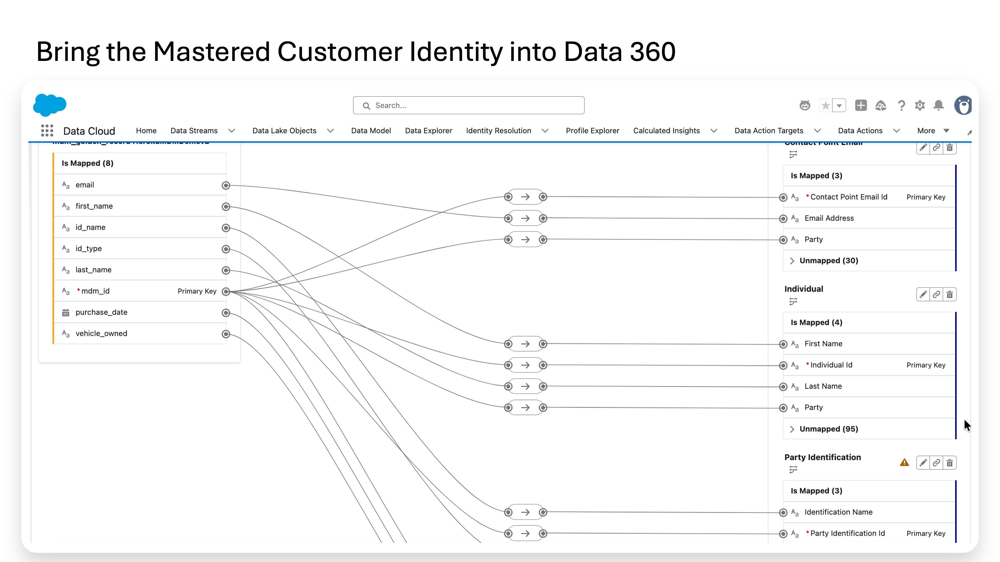
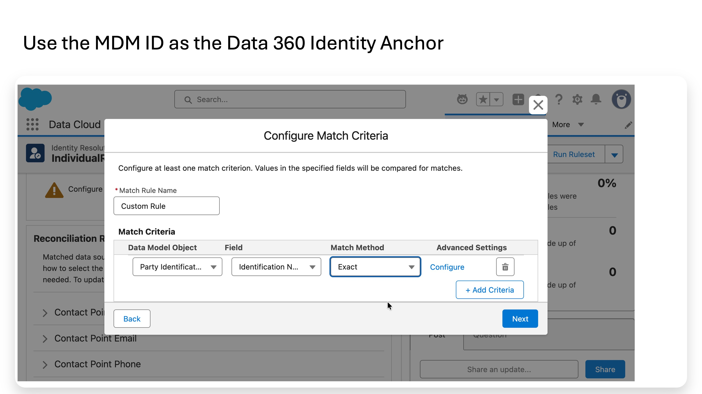
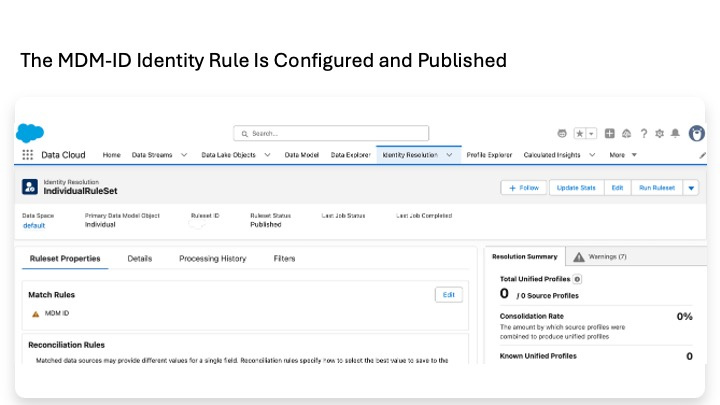
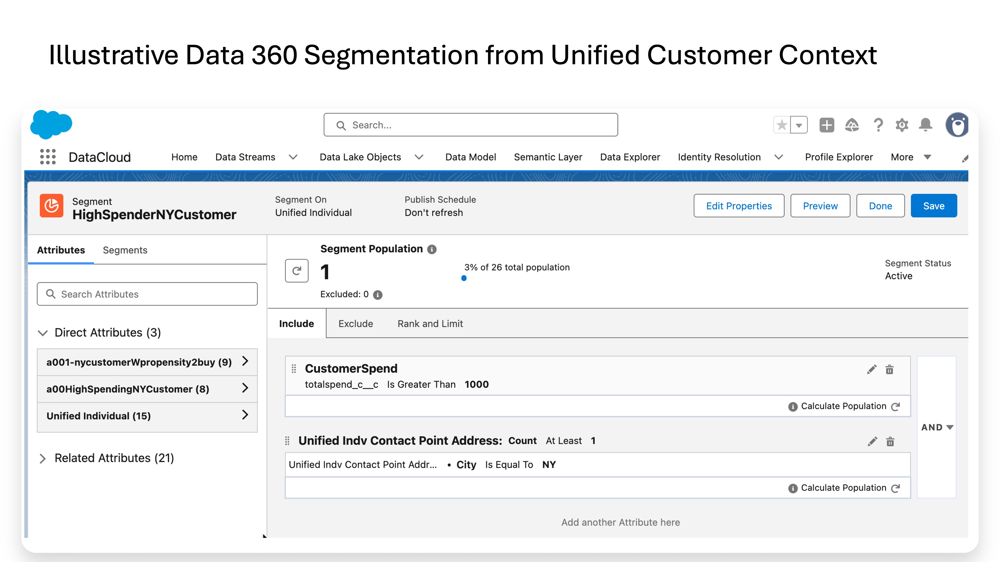

Lab 7
Informatica Master Data Management (MDM) has already created a trusted customer record by matching and merging records that belong to the same person. The next question is how Salesforce can use that trusted identity together with the customer's behavior.
Salesforce Data 360 is the activation layer in this lab. It receives the mastered customer from Informatica, relates that customer to engagement and transaction data that remains in Databricks, and makes the combined information available for insights, segmentation, and downstream use.
Publish the mastered customer from Informatica into Data 360, connect that customer to engagement and transaction data in Databricks, and show how Data 360 turns the combined information into a usable Salesforce customer profile.
In short: Informatica decides who the customer is; Data 360 combines that trusted identity with customer behavior and puts it to work.
Two types of data enter Data 360 in two different ways:
Informatica MDM Trusted / Golden Customer | | Data 360 Ingestion API v Salesforce Data 360 Databricks customer_events + transactions | | Zero-copy federation v Salesforce Data 360
Inside Data 360, the two data streams are brought together and used:
Trusted Customer + Engagement / Transactions | v Unified Individual | +---------+---------+ | | | v v v Lifetime Value Segment Data Graph | v Activation / use
The mastered customer is relatively small, durable identity data that Data 360 needs as part of its customer profile, so it is published into Data 360. Engagement and transaction data can be much larger and changes continuously. It already lives in Databricks, so Data 360 queries it there instead of creating another full copy.
Mastered identity -> copy into Data 360 Engagement + transactions -> leave in Databricks and query in place
This keeps the roles clear: Informatica MDM remains the source of mastered identity, Databricks remains the source of behavioral and transaction data, and Data 360 combines the two for activation.
| Part | Question it answers |
|---|---|
| A | How does the mastered customer get into Data 360? |
| B | How does Databricks behavioral data join that customer without being copied? |
| C | Why does Data 360 still run Identity Resolution after Informatica has already mastered the customer? |
| D | How do transactions become a customer insight such as Lifetime Value? |
| E | How do profile, insight, and engagement data become an activation-ready segment? |
| F | How is the combined customer context packaged for downstream use? |
Terminology: Data 360 is the current name for Salesforce Data Cloud. Some screens and documentation may still use the older Data Cloud name.
Scope: This is a conceptual lab. It explains the architecture and the Data 360 objects that matter rather than giving click-by-click UI instructions. Agentforce is out of scope.
Informatica MDM Golden Person | | Data 360 Ingestion API v Data 360 profile objects
Informatica publishes the golden Person directly to the Salesforce Data 360 Ingestion API. Databricks is not used as an intermediate staging point for the golden record.
The important Data 360 concept is that one logical customer is represented by several related Data Model Objects (DMOs). A DMO is a standard Data 360 object used to represent a particular kind of customer information.
Individual | +--> Contact Point Email +--> Contact Point Phone +--> Party Identification --> Informatica MDM Business ID
| DMO | What it holds | Why it matters |
|---|---|---|
| Individual | The customer profile. For Sarah, the row is keyed by the MDM Business ID and carries fields such as first name, last name, and the workshop consent flag. | This is the core Data 360 customer object. |
| Contact Point Email | The mastered email address, related back to the Individual through Party ID. | Data 360 models email as a separate contact point because a person can have multiple emails, each with its own lifecycle and consent. |
| Contact Point Phone | The mastered phone number, related back to the Individual through Party ID. | The same contact-point model is used for phone. |
| Party Identification | The external identity anchor. It records the Informatica MDM Business ID as an external MDM identifier for the Individual. | This gives Data 360 a governed place to retain the identifier created by Informatica and use it for identity matching. |
Party Identification is the key integration object in this design. It records that a Data 360 Individual is anchored to a specific Informatica MDM Business ID. That identifier is then available to Identity Resolution and to audit or reporting use cases.
| Informatica source | Data 360 target |
|---|---|
| mdm_business_id (for example, MDM0000000002S) | Individual ID |
| first_name (mastered) | First Name |
| last_name (mastered) | Last Name |
| marketing_consent | Custom consent flag on Individual for the workshop |
| Informatica source | Data 360 target |
|---|---|
| mdm_business_id || '|EMAIL' | Contact Point Email ID |
| mdm_business_id | Party ID |
| email (mastered) | Email Address |
| Informatica source | Data 360 target |
|---|---|
| mdm_business_id || '|PHONE' | Contact Point Phone ID |
| mdm_business_id | Party ID |
| phone_e164 (mastered) | Formatted E164 Phone Number |
| Informatica source | Data 360 target |
|---|---|
| mdm_business_id || '|MDM' | Party Identification ID |
| mdm_business_id | Party |
| mdm_business_id | Identification Number |
| Constant 'Informatica C360 MDM ID' | Identification Name |
| Constant 'External MDM Identifier' | Party Identification Type |
The Identification Name and Party Identification Type make the row explicit: this identifier came from Informatica MDM and represents an external MDM identifier.
The architectural requirement is the same regardless of implementation: Informatica's mastered data must reach the Data 360 Ingestion API. CDI, CAI, Business 360 Egress, MuleSoft, or custom code can perform or orchestrate that call. The choice changes who owns scheduling, monitoring, transformation, retry, and error handling; it does not change the target Data 360 data model.
Appendix C compares the available publishing options in more detail.
In this architecture, Databricks is the source for behavioral and transaction data, not the system of record for Informatica-mastered identity. Writing golden identity to Databricks first would add another hop, another synchronization point, and another place where identity data must be secured and audited. Because Data 360 already provides an Ingestion API for external systems, the golden record can be published directly.
Appendix A preserves the full architecture rationale.
Part A result: The trusted customer created in Informatica is now represented in Data 360, and the Informatica MDM Business ID is retained as the identity anchor.
Databricks customer_events + transactions | | Zero-copy federation v Data 360 engagement objects | | mdm_business_id v Data 360 customer profile
The customer_events and transactions datasets stay in Databricks. Data 360 uses zero-copy federation to query them in place rather than ingesting full copies into Data 360.
Both datasets carry mdm_business_id. That gives Data 360 a common key for relating behavioral and transaction rows back to the mastered customer published in Part A.
| Databricks source | Data 360 representation | Relationship |
|---|---|---|
| customer_events | Engagement DMO, for example CV1 Customer Event, backed by federation | mdm_business_id relates the event to the mastered Individual |
| transactions | Engagement DMO, for example CV1 Transaction, backed by federation | mdm_business_id relates the transaction to the mastered Individual |
Data 360 queries Databricks when the data is needed for uses such as segmentation, calculated insights, or profile context. The raw customer_events and transactions tables remain in Databricks.
The source document also notes that the federation design can use acceleration for faster response, which creates a local cache and therefore a freshness trade-off. For the workshop architecture, acceleration remains off so the conceptual pattern stays purely zero-copy. The document also notes the Databricks File Federation Connector as another implementation option for accessing Databricks data without requiring a full copy.
Part B result: Data 360 can use the customer's behavior and transactions while Databricks remains the system that stores the raw engagement data.
This is the most important distinction in the lab. Informatica MDM has already made the identity decision. Data 360 is not being asked to independently remaster Sarah using email, phone, or fuzzy name matching.
Data 360 still runs Identity Resolution because that is how Data 360 materializes the Unified Individual used by downstream capabilities such as segmentation, calculated insights, and Data Graphs.
Informatica MDM already decided: "These records belong to the same customer" | v MDM Business ID | v Data 360 Identity Resolution exact match on MDM ID | v Unified Individual
For this workshop, the Identity Resolution rule is deliberately simple: two Individuals are treated as the same person when they share the same Informatica MDM Business ID.
| Property | Value |
|---|---|
| Object | Party Identification |
| Field | Identification Number |
| Match Method | Exact |
| Filter — Identification Name | 'Informatica C360 MDM ID' |
| Filter — Party Identification Type | 'External MDM Identifier' |
No email comparison, phone comparison, or fuzzy name logic is required for the workshop because Informatica has already established the mastered identity.
The lab's source material identifies Party Identifier exact matching as the Data 360 pattern intended for identifiers from external MDM systems and vendor-specific identifier spaces.
Expected workshop outcome: each Informatica-mastered Individual produces one Unified Individual. In a broader production implementation, additional Data 360 Identity Resolution rules could also be used for profiles that were not mastered by Informatica.
Part C result: Data 360 accepts the Informatica MDM Business ID as the identity anchor and creates the Unified Individual needed by downstream Data 360 features.
Federated transactions + Unified Individual | v Calculated Insight Lifetime Value (LTV)
We now know who the customer is and can relate transaction rows to that customer. The next step is to calculate something useful from those transactions.
A Calculated Insight is a scheduled aggregation defined in Data 360 SQL. In this lab, the insight is Lifetime Value: the sum of valid transaction amounts for each Unified Individual.
The important modeling point is that the result is grouped by Unified Individual so the calculated value can be used directly in segmentation and other profile-level uses.
Adjust DMO and field API names to the tenant; they are case-sensitive.
SELECT UnifiedIndividual__dlm.ssot__Id__c AS UnifiedCustomerId__c, SUM(CV1_Transaction__dlm.Amount__c) AS LifetimeValue__c FROM CV1_Transaction__dlm JOIN IndividualIdentityLink__dlm ON CV1_Transaction__dlm.mdm_business_id = IndividualIdentityLink__dlm.SourceRecordId__c JOIN UnifiedIndividual__dlm ON IndividualIdentityLink__dlm.UnifiedRecordId__c = UnifiedIndividual__dlm.ssot__Id__c WHERE UPPER(CV1_Transaction__dlm.Transaction_Status__c) = 'VALID' GROUP BY UnifiedIndividual__dlm.ssot__Id__c
The raw transactions do not need to be stored in Data 360 for the calculation to use them. The lab's architecture has Data 360 query the federated Databricks data and materialize the aggregated LTV result in Data 360.
Databricks stores: raw transaction rows Data 360 stores: calculated LTV per Unified Individual
For the insight to appear as a usable profile attribute in segment building, the profile key — Unified Individual ID in this design — must be included as a dimension in the Calculated Insight.
Part D result: Raw transactions remain in Databricks, while Data 360 holds the customer-level insight needed for activation.
A Calculated Insight becomes useful when Salesforce can act on it. This example creates one segment using three different kinds of customer information.
Customer profile Calculated insight Engagement Marketing consent Lifetime Value Recent interest \ | / \ | / +----------------+----------------+ | v Segment
A customer qualifies only when all three conditions are true:
• Marketing Consent = true
• Lifetime Value > 1000
• A Customer Event exists where Product Category = 'Hiking Jackets' and Event Time is within the last 30 days
| Condition | Source |
|---|---|
| Marketing Consent | Individual, published from Informatica in Part A |
| Lifetime Value | Calculated Insight from Part D, bound to Unified Individual |
| Recent Hiking Jackets interest | customer_events, federated zero-copy from Databricks |
This is the activation value of the architecture: profile data, a calculated customer insight, and live behavioral data can participate in one audience definition.
Publish choice in the source lab: Standard Publish, not Rapid Publish. The example uses a 30-day engagement lookback, while the source document states that Rapid Publish supports only a 7-day engagement lookback.
Whether Sarah or Diego qualifies depends on the sample values: marketing consent must be true, valid transactions must total more than $1,000, and a Hiking Jackets event must exist within the last 30 days.
Part E result: Data 360 turns trusted identity, customer value, and recent behavior into an activation-ready audience.
Unified Individual + Mastered email / phone + Lifetime Value + Recent events / transactions + Segment membership | v Data Graph one profile-centered payload for downstream use
At this point Data 360 knows who the customer is, can relate behavioral data to that identity, has calculated customer value, and knows which segments the customer belongs to.
A Data Graph packages a profile and its related context into a denormalized JSON structure that downstream applications can consume together.
• Anchor: Unified Individual, or Individual if Identity Resolution was not run.
• Profile: MDM Business ID from Party Identification, first name, last name, mastered email, mastered phone, and Marketing Consent.
• Insight: Lifetime Value from the Calculated Insight in Part D.
• Recent engagement: Customer Events from the last 30 days and Transactions from the last 90 days, federated from Databricks.
• Segment membership: the segments the profile currently qualifies for.
For Sarah, the result is one customer-centered payload containing mastered identity, customer value, recent behavior, and segment membership. That package can support downstream Salesforce experiences, dashboards, custom applications, and other consumers. Agentforce and Prompt Builder are natural possible consumers, but they are outside this workshop.
Part F result: The combined profile and context are packaged in a form that downstream applications can consume without rebuilding the joins themselves.
We started with a customer whose identity had already been mastered in Informatica. We published that trusted identity directly into Data 360 while leaving the larger engagement and transaction datasets in Databricks.
The Informatica MDM Business ID gives Data 360 a stable identity anchor. Data 360 then uses that identity to create a Unified Individual, relate behavioral data to the customer, calculate Lifetime Value, define an audience segment, and package the resulting context in a Data Graph.
Golden Customer | v Unified Individual | v Lifetime Value | v Segment | v Data Graph / Activation
In short: Informatica establishes trusted identity; Data 360 combines that identity with customer behavior and makes it usable in Salesforce.
• Party Identification preserves the external Informatica MDM identifier as a first-class identity relationship in Data 360.
• Zero-copy federation avoids creating a full additional copy of customer_events and transactions in Data 360.
• The Data 360 Ingestion API is the common publish contract; CDI, CAI, Business 360 Egress, MuleSoft, or custom code can sit around that API depending on who owns orchestration.
• Consent is simplified to one Marketing Consent flag in the workshop. Production consent normally requires richer per-channel, per-purpose, and jurisdiction-aware modeling.
• Segment activation should send only the identifiers and attributes a destination actually needs.
• Publishing into Data 360 does not overwrite the Informatica master, and federation does not mutate the Databricks source tables.

The mastered customer data written back to Databricks is mapped into Data 360 objects including Individual, Contact Point Email and Party Identification. The Informatica MDM Business ID is carried into Party Identification so Data 360 can use the enterprise identity already established by MDM.

Identity Resolution compares the Party Identification Number using an Exact match. Data 360 is therefore using the MDM Business ID to connect records that already share the same mastered identity, rather than attempting to master the customer again with fuzzy name, email or phone matching.

The Data 360 ruleset contains the MDM ID match rule and is published. This screenshot shows the configuration, not a completed end-to-end unification run: the resolution summary still shows zero source and unified profiles in this workshop environment.

Once identity is established, Data 360 can relate that trusted customer to the separate behavioral and transaction datasets coming from Databricks for calculated insights, segmentation and activation. This screen shows how Data 360 can build an audience from attributes on a Unified Individual and related data — here using customer spend and city. It is an illustrative segmentation example, not the exact segment specification in the current Lab 7, but it demonstrates the activation step that follows trusted identity and calculated context.
Lab 7 showed how trusted customer data is put to use. Lab 8 changes perspective and asks how the technical landscape can be cataloged, understood, governed, and traced.
Lab 8 uses Informatica's catalog and governance capabilities to discover Salesforce and Databricks technical assets, bring CDI integration metadata into the catalog, give related fields common business meaning, and inspect lineage.
The transition: Lab 7 activates the data. Lab 8 makes the landscape understandable and governable.
The main lab gives the short answer. This appendix preserves the fuller architecture reasoning for design reviews.
1. Boundary clarity. Databricks is the workshop's home for large behavioral and analytical data such as events and transactions. Informatica MDM SaaS is the home for golden identity. Making Databricks the courier for identity data blurs those responsibilities.
2. Extra latency window. Any staging step introduces a period where staged data can be out of sync with its source. For golden identity, MDM is the source; a Databricks staging table would be a mirror.
3. Additional PII surface. Every additional store that holds mastered identity becomes another place to secure, audit, and govern.
4. No API benefit that was not already available. The Data 360 Ingestion API accepts pushes from external clients, including Informatica. Databricks is therefore not required as an intermediate hop.
5. Consistency with the architecture documented for this workshop. The lab uses the Data 360 Ingestion API pattern for Informatica-to-Data 360 publishing and reserves Databricks for zero-copy behavioral and transaction data.
The source lab treats these as implementation choices around the same Data 360 Ingestion API. The architectural data flow remains Informatica → Data 360; the choice is who owns the orchestration, monitoring, and retry logic.
| Option | Who owns orchestration | When to choose it |
|---|---|---|
| Informatica-side CDI mapping | Informatica team | Scheduled bulk or delta publishes managed through IDMC job scheduling and audit. Best fit when Informatica is the primary integration engine. |
| Informatica-side CAI process | Informatica team | When publishing requires orchestration logic such as search, decisioning, transformation, error handling, or retry. CAI processes can also be exposed as REST endpoints. |
| Informatica Business 360 Egress job | Informatica MDM operations | Production scheduled publishing using Business 360 egress controls such as master vs. source, active vs. deleted, and full vs. incremental. |
| MuleSoft or another middleware | API / integration platform team | When middleware is already the enterprise integration layer. The target Data 360 API contract remains the same. |
| Custom code (Python, Java, etc.) | Application team | Greenfield or unusual environments where no managed integration platform is being used. |
The architectural point: these options use the same target API pattern. The operational choice is who runs the integration, who monitors it, and which platform owns retries and audit.
The source document states that the workshop's current recommended pattern for Informatica-to-Data 360 ingestion is API integration through the Data 360 Ingestion API, either directly from Informatica or through another integration layer such as MuleSoft.
Parts A–F describe the pattern used to populate and activate data in Data 360. A separate pattern is useful when a consumer needs one golden customer immediately rather than a bulk or scheduled profile feed.
Salesforce / custom app / service screen | | real-time REST request v Informatica Business 360 | v one golden customer
Example use case: a service agent opens Sarah's Salesforce record and requests the current golden customer profile. The consumer can search Informatica using an email or another searchable attribute and then retrieve the golden record using the returned MDM Business ID.
This does not compete with the Data 360 flow. The two patterns serve different needs:
| Pattern | Best suited for |
|---|---|
| Publish to Data 360 | Bulk profile population, calculated insights, segmentation, Data Graphs, and scheduled activation. |
| Direct Business 360 REST lookup | Interactive one-customer-at-a-time lookup, search-before-create, or on-demand enrichment. |
The direction of the flow is also different. In Parts A–F, Informatica pushes data to Data 360. In a direct lookup, the consumer initiates the request and pulls the current golden record from Informatica.
The Party Identification row records the external Informatica MDM identifier alongside the Data 360 Individual. This gives governance and audit teams a defined place to ask which Data 360 profiles are anchored to Informatica MDM identities.
customer_events and transactions remain in Databricks while Data 360 queries them through federation. This avoids creating another full behavioral and transaction data store in Data 360, while Databricks remains the enforcement point for its own catalog permissions, row filters, and masking.
The publish implementation may be CDI, CAI, Business 360 Egress, MuleSoft, or custom code, but the Data 360 Ingestion API remains the common target contract. Authentication, encryption in transit, rate limits, logging, and allow-listing should be reviewed at that boundary.
In bulk publishing, Informatica initiates the push to Data 360. In real-time lookup, the consuming application initiates a request to Informatica. The credentials, monitoring, and audit model should reflect that difference.
The workshop uses a single Marketing Consent flag for clarity. Production consent is richer: it can vary by channel, purpose, jurisdiction, expiration, and revocation. Data 360 provides dedicated consent and contact-point-preference models for those broader requirements.
A segment can be activated to downstream destinations such as email, advertising, personalization, or other applications. Data minimization still applies: send only the identifiers and attributes the destination needs.
Publishing a subset of mastered fields into Data 360 does not overwrite Informatica's MDM source of truth. Zero-copy queries do not mutate the Databricks source tables. If downstream activation is configured incorrectly, the source master remains intact.
Trusted Data Foundation Workshop